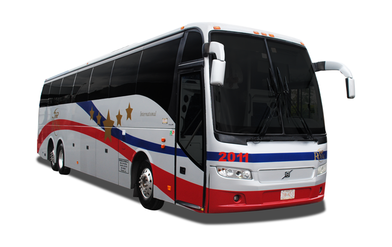

El transporte terrestre permite trasladar personas y mercancías por la superficie terrestre.
Es uno de los medios de transporte más utilizados y pueden realizarse por carreteras o vías ferroviarias.
Más información sobre el transporte terrestre